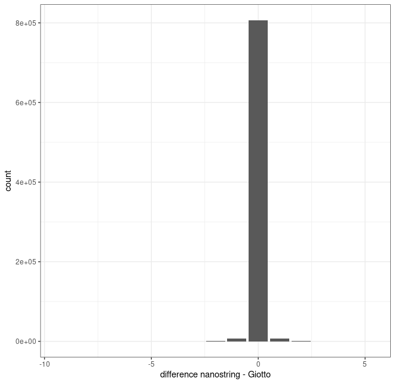

Note: Feature aggregation is mainly used with subcellular datasets
See also: Giotto object creation for a more complete introduction to raw spatial features and spatial units.
Many analysis methods work best with spatial features that have been
aggregated based on some kind of functional context e.g. a cell, niche,
or domain into an expression matrix format. Giotto provides tools to do
this aggregation with sets of spatial unit annotations (represented as
giottoPolygon) overlapped against point features
(giottoPoints) and raster intensity-based features
(giottoLargeImage):
- calculateOverlap Is used in order to find spatial overlaps between individual polygon IDs and raw feature detections or image values and return it as a table.
-
overlapToMatrix
Is used to take the table of relations calculated in
calculateOverlap()and turn that into an expression matrix.
These are generic functions and they can either be performed directly
on the Giotto subobjects (see function documentation examples above for
more info) or from the overarching giotto analysis
object.
# Ensure Giotto Suite is installed.
if(!"Giotto" %in% installed.packages()) {
pak::pkg_install("drieslab/Giotto")
}
# Ensure GiottoData is installed.
if(!"GiottoData" %in% installed.packages()) {
pak::pkg_install("drieslab/GiottoData")
}
library(Giotto)Feature point aggregation
Giotto performs feature point aggregation by converting polygonal annotations to raster masks and then extracting the overlapped points data. This is a slight approximation, but is a large speed improvement.
g <- GiottoData::loadGiottoMini("vizgen")
# aggregate subobjects
g <- calculateOverlap(g,
spatial_info = "z0",
feat_info = "rna"
)
g <- overlapToMatrix(g,
type = "point",
poly_info = "z0",
feat_info = "rna",
name = "raw"
)Comparison of Giotto vs default outputs
Due to the approximation and possible differences by which points overlaps are called depending on the software, it is possible for there to be small differences between the values calculated from Giotto Suite vs those provided as part of the standard outputs.
Here we provide an example comparison between Giotto Suite overlaps vs original Nanostring CosMx expression matrix outputs from their legacy FFPE non-small-cell lung cancer dataset. This example is using FOV2 from the Lung12 dataset.
import data
# ** SET PATH TO FOLDER CONTAINING COSMX DATA **
data_path <- "path/to/data"
cosmx <- importCosMx(cosmx_dir = data_dir)
# fix offsets not being detected
cosmx$offsets <- data.table::fread(file.path(data_dir, "Lung12_fov_positions_file.csv"))
names(cosmx$offsets) <- c("fov", "x", "y")
# set FOV to load
cosmx$fovs <- 2
polys <- cosmx$load_polys(shift_vertical_step = TRUE)
points <- cosmx$load_transcripts()
nano_expr <- cosmx$load_expression()
nano_expr <- nano_expr[[1]][] # select the `rna` values and drop to dgCMatrix
plot(points$rna, raster = FALSE)
plot(polys[[1]], add = TRUE, border = "red")
perform Giotto aggregation
giotto_expr <- calculateOverlap(polys[[1]], points$rna) |>
overlapToMatrix()expression matrix discrepancies
# No differences in features found
setequal(rownames(giotto_expr), rownames(nano_expr)) # TRUE
# Differences in cells found
length(colnames(giotto_expr)) # 2983
length(colnames(nano_expr)) # 2985
# What accounts for this discrepancy?
colnames(nano_expr)[which(!colnames(nano_expr) %in% colnames(giotto_expr))]
# "c_1_2_1796" "c_1_2_244"
#
plot(polys[[1]][c("c_1_2_1796", "c_1_2_244")], col = "black")
plot(polys[[1]], add = TRUE, border = "red", lwd = 0.5)
These polygons are entirely overlapped by other polygons and thus ignored
prep data for comparison
# Align matrix ordering
# Match samples on giotto-found
giotto_expr <- giotto_expr[sort(rownames(giotto_expr)), sort(colnames(giotto_expr))]
nano_expr <- nano_expr[sort(rownames(nano_expr)), sort(colnames(giotto_expr))]
# Prepare matrix comparison
# Summarise sparse matrices (i and j are matrix indices, x is value)
g_dt <- data.table::as.data.table(Matrix::summary(giotto_expr))
g_dt[, method := "giotto"]
n_dt <- data.table::as.data.table(Matrix::summary(nano_expr))
n_dt[, method := "nanostring"]
test_dt <- data.table::rbindlist(list(g_dt, n_dt))
# Combine sparse matrix indices
test_dt[, combo := paste0(i,"-",j)]plot comparisons
library(ggplot2)
# matrix index similarity
pl_n <- ggplot()
pl_n <- pl_n + geom_tile(data = n_dt, aes(x = i, y = j, fill = log(x+1)))
pl_n <- pl_n + ggtitle("Nanostring Sparse Matrix")
pl_n <- pl_n + scale_fill_gradient(low = "blue", high = "red")
pl_n <- pl_n + theme(panel.grid.major = element_blank(),
panel.grid.minor = element_blank(),
panel.background = element_rect(fill = "black"))
pl_g <- ggplot()
pl_g <- pl_g + geom_tile(data = g_dt, aes(x = i, y = j, fill = log(x+1)))
pl_g <- pl_g + ggtitle("Giotto Sparse Matrix")
pl_g <- pl_g + scale_fill_gradient(low = "blue", high = "red")
pl_g <- pl_g + theme(panel.grid.major = element_blank(),
panel.grid.minor = element_blank(),
panel.background = element_rect(fill = "black"))
cowplot::plot_grid(pl_n, pl_g,
nrow = 2,
labels = "AUTO"
)
# directly compare differences in matrix values (counts assigned)
test_dt[, diff := diff(x), by = .(i,j)]
data.table::setorder(test_dt, var)
# plot difference in values
pl <- ggplot()
pl <- pl + geom_bar(data = test_dt, aes(x = diff))
pl <- pl + theme_bw()
pl <- pl + labs(x = "difference nanostring - Giotto")
print(pl)
Overall of the shared entries that were called by both methods (common i and j indices), there appears to be no major bias in terms of counts/values assigned. Moreover, the vast majority of these shared entries have the same values (difference of 0).
Raster intensities aggregation
g <- calculateOverlap(g,
name_overlap = "dapi",
spatial_info = "z0",
image_names = "dapi_z0"
)
g <- overlapToMatrix(g,
poly_info = "z0",
feat_info = "dapi",
type = "intensity"
)Session info
R version 4.4.1 (2024-06-14)
Platform: aarch64-apple-darwin20
Running under: macOS 15.0.1
Matrix products: default
BLAS: /System/Library/Frameworks/Accelerate.framework/Versions/A/Frameworks/vecLib.framework/Versions/A/libBLAS.dylib
LAPACK: /Library/Frameworks/R.framework/Versions/4.4-arm64/Resources/lib/libRlapack.dylib; LAPACK version 3.12.0
locale:
[1] en_US.UTF-8/en_US.UTF-8/en_US.UTF-8/C/en_US.UTF-8/en_US.UTF-8
time zone: America/New_York
tzcode source: internal
attached base packages:
[1] stats graphics grDevices utils datasets methods base
other attached packages:
[1] GiottoClass_0.4.5
loaded via a namespace (and not attached):
[1] SummarizedExperiment_1.34.0 rjson_0.2.21 xfun_0.49
[4] raster_3.6-26 Biobase_2.64.0 lattice_0.22-6
[7] tools_4.4.1 stats4_4.4.1 proxy_0.4-27
[10] GiottoData_0.2.15 pkgconfig_2.0.3 KernSmooth_2.23-24
[13] Matrix_1.7-0 data.table_1.16.2 checkmate_2.3.2
[16] S4Vectors_0.42.0 lifecycle_1.0.4 GenomeInfoDbData_1.2.12
[19] compiler_4.4.1 GiottoUtils_0.2.3 terra_1.7-78
[22] codetools_0.2-20 GenomeInfoDb_1.40.0 htmltools_0.5.8.1
[25] class_7.3-22 yaml_2.3.10 exactextractr_0.10.0
[28] crayon_1.5.3 classInt_0.4-10 SingleCellExperiment_1.26.0
[31] DelayedArray_0.30.0 magick_2.8.5 abind_1.4-8
[34] gtools_3.9.5 digest_0.6.37 sf_1.0-16
[37] fastmap_1.2.0 grid_4.4.1 cli_3.6.3
[40] SparseArray_1.4.1 magrittr_2.0.3 S4Arrays_1.4.0
[43] e1071_1.7-14 withr_3.0.2 UCSC.utils_1.0.0
[46] backports_1.5.0 sp_2.1-4 rmarkdown_2.29
[49] XVector_0.44.0 httr_1.4.7 matrixStats_1.4.1
[52] igraph_2.1.1 reticulate_1.39.0 png_0.1-8
[55] SpatialExperiment_1.14.0 evaluate_1.0.1 knitr_1.49
[58] GenomicRanges_1.56.0 IRanges_2.38.0 rlang_1.1.4
[61] Rcpp_1.0.13-1 glue_1.8.0 DBI_1.2.3
[64] BiocGenerics_0.50.0 pkgload_1.3.4 rstudioapi_0.16.0
[67] jsonlite_1.8.9 R6_2.5.1 units_0.8-5
[70] MatrixGenerics_1.16.0 zlibbioc_1.50.0